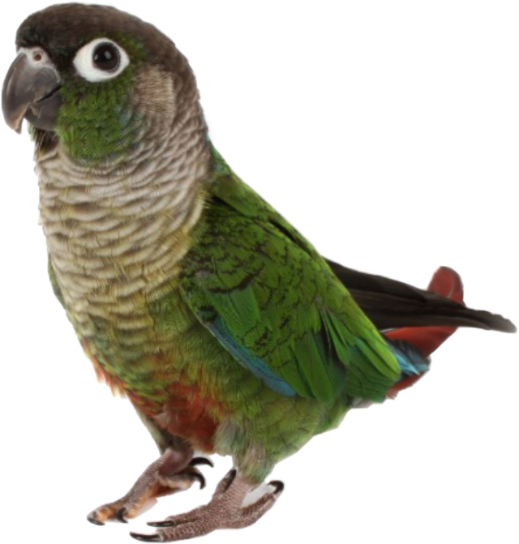

Having a Pet Conure
Green cheek conures are small, beautiful and very intelligent birds with vibrant personalities. If well taken care
of, these parrots can live for up to 30 years and can grow to be around 25 centimetres in length.
Their feathers consist of many different colours; green cheek conures are mostly dark green with a
dark red tail. They also usually have small patches of red, yellow, blue, and different shades of grey all over their
body.
Even though they are small, green cheek conures are very expressive and tend to have large personalities.
They are bold, adventurous and outgoing. Green cheek conures love to socialize and have fun,
which is part of why they make such fantastic pets. Along with being very personable,
these parrots are also extremely smart. With some practice they can learn to say simple words
and phrases, and can even learn fun tricks and commands.

Green cheek conures can make for truly amazing pets!
References
(full articles/websites where you can purchase books referenced are linked)
green cheek conure
Rachael Mohl
CIS*1050
April 2020
If you have any questions, just contact me at rmohl@uoguelph.ca!